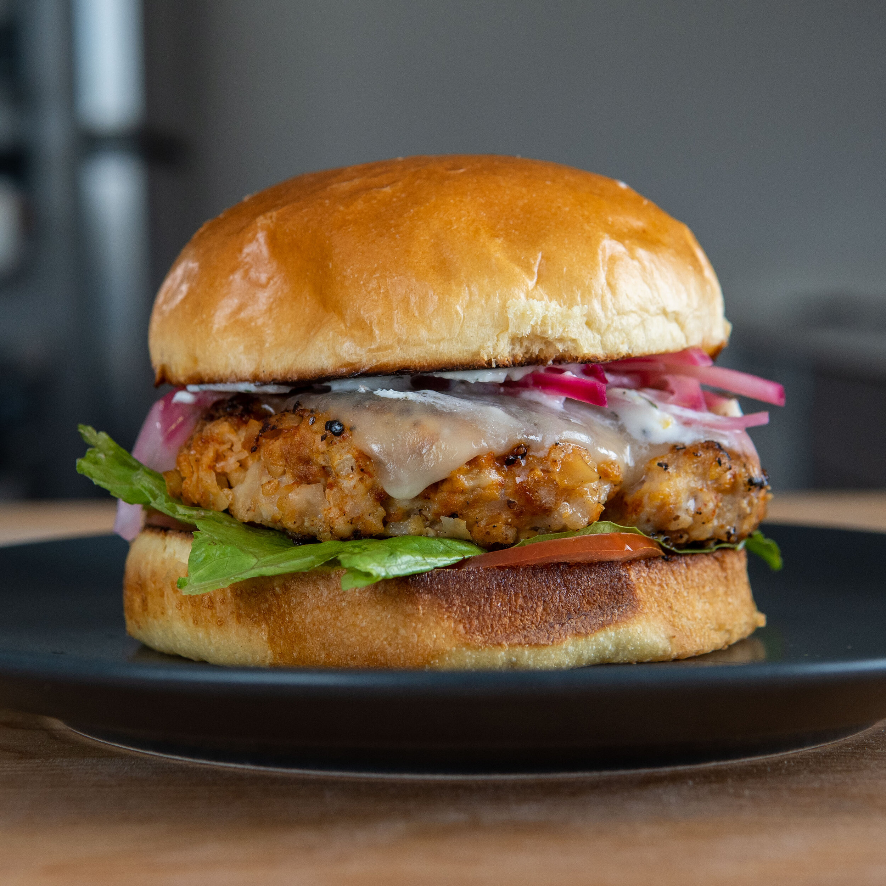

Chicken Chickpea Burger

Chicken Chickpea Burgers with self ground chicken
This burger is made with ground chicken and chickpeas, which yields a very
interesting texture and a nice bite.
Ingredients
- Chicken Thighs
- Chickpeas
- White Onion
- Chile Powder
- Smoked Paprika
- Coarse Salt
- Black Pepper
- Vegetable Oil
Steps
-
To start, separate the chicken thighs into skins, meat, and bones. The
bones can be kept for stock. Cut each chicken thighs into roughly
one-inch chunks and the skin into two-inch sheets.
-
Using a scale, weigh out the lean chicken chunks. Calculate how much
skin needs to be added to make a 90% lean, 10% fat mixture (example: I
had 11 oz of chicken thigh, so I used about 1.2 oz of skin). Spread out
the chicken on a baking sheet and place in the freezer for 15-20
minutes. This will help prevent smearing in the food processor. Note:
While you wait mash the chickpeas, mince the onion, prepare the yogurt
sauce, and any other burger toppings.
-
Place the partially frozen chicken thighs and skin in the bowl of a food
processor and pulse about 10-15 times until a ground chicken mixture
forms. Test it by picking some up and see if you can form it in your
hands. Note: The chicken can also be hand-chopped into the ground meat
as I did in my chicken nugget recipe.
-
Now to a large mixing bowl add 8 ounces of the ground chicken, mashed
chickpeas, finely minced onion, smoked paprika, and chile powder. Mix
with your hands until a loose but homogenous mixture forms. Form the
chicken and chickpea mixture into 3 to 4 evenly sized burgers. Make them
a little wider than your bun with an indentation as they will shrink
when cooking. Generously salt and pepper the exterior of the burgers.
-
At the stove, set a cast iron over medium heat and add in a half
tablespoon of peanut oil. Once hot, place the patty away from you and
cook until browned and the exterior starts to crisp up about 3 to 4
minutes. Flip the burger and cook for another 3-4 minutes. If using, add
the cheese at the last minute to melt. Pull the burgers off when the
internal temp is 165 and it is nicely browned on the exterior.
-
Assemble the burger with a toasted bun, yogurt sauce, tomatoes, lettuce,
and pickled onion or whatever your desired toppings are.